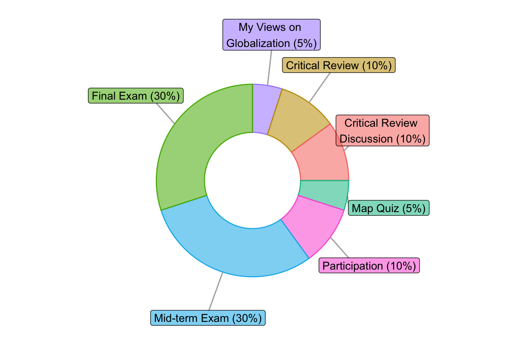

Update log (This syllabus is ‘live’ and any changes are recorded here.)
- Jan 15: This syllabus is created.
- Jan 16: Caveats added at the beginning of Section 5.
- Jan 16: Typo corrected in the chapter number of “Human Rights” reading (Section 5).
- Jan 16: ‘technology’ policy is added to Section 4.
- Jan 16: Typos corrected in 4.6 of Section 4.
- Jan 19: ‘check Canvas 4 times a week’ is removed from Section 3.1 as it’s redundant.
- Jan 22: In Section 3.3.2, the deadline is clarified for the 1st MVG (not graded–you submit one, you get the grade)
1 Instructor
- Byunghwan ‘Ben’ Son (bson3@gmu.edu)
- Associate Professor of Global Affairs
- Personal Webpage
- GLOA Profile
- Github
- Google Scholar
- Office Hours: 2:45-4:15 PM (T); 10:00-11:30AM (R). 6235 Horizon Hall
- Email Communications
- All communications occur through GMU emails. Do not use Canvas Messages.
- You can email me whenever you want, but my responses to the emails sent to me after 5 pm weekdays as well as any time during the weekend will be significantly slow.
- For your own interest, you might want to try to use the normal working hours (9 AM to 5 PM, Monday through Friday). In your email, please indicate
who you are andwhich class you’re in (i.e., GLOA 101) .
2 Course Description
Three decades ago the terms “global” or “globalization” were rarely employed in academic or non-academic conversations. Today the terms are firmly etched in the popular imagination. This merits asking: in what sense has our world suddenly become “global”? What was our world before it became “global”? What is Globalization? How does Global Affairs help us understand Globalization and make sense of our changing world and engagements across the globe? In this course we will examine logics and architectures of contemporary global affairs and globalization – including agents, actors, institutions and social structures. We explore common questions including: what do we talk about when we talk about globalization and global affairs? The class serves as an introduction to the study of global affairs and aims at helping students establish analytical tools to understand global issues.
2.1 What you’re getting from this course
Taking this course fufils two Mason Core requirements (Global Understanding/Contexts and Justice Societies). What a deal! 😎
2.1.1 Course Objectives and Learning Outcomes
By the end of the course, students should be able to:
- Apply key terms of global studies to assess the study of global issues and our own position in these structures.
- Articulate and analyze the multi-faceted cultural, political, economic, and environmental dimensions of globalization that shape, and are shaped by, interconnected global processes.
- Reflect critically on everyday representations of global issues and challenges, articulate possible solutions, and common obstacles.
- Apply an interdisciplinary lens to evaluate the representation of how global issues and potential solutions affect places and peoples unevenly/unequally across the world.
- Engage in analysis and dialogue with classmates about how global aspects of justice, diversity, inclusion, and equity have defined the historical global relations and continue to operate in our vastly disparate contemporary global context.
- Develop their own academic reading and writing skills: to identify in their own work and in that of others the elements of a strong academic analysis.
2.1.2 Global Understanding
This course also fulfills the global understanding requirement in the Mason Core (applies to those entered Mason before Fall 2024). It is designed to help you to meet at least three of the following learning outcomes at the completion of the course:
- Identify and articulate one’s own values and how those values influence one’s interactions and relationships with others, both locally and globally
- Demonstrate understanding of how the patterns and processes of globalization make visible the interconnections and differences among and within contemporary global societies
- Demonstrate development of intercultural competencies
- Explore individual and collective responsibilities within a global society through analytical, practical, or creative responses to problems or issues, using resources appropriate to the field (These goals are quoted from the Mason Core website)
2.1.3 Global Contexts
This course also fulfills the global context requirement in the Mason Core (applies to those entered Mason in or after Fall 2024). Upon completing a global context core course, students will be able to:
- Identify and explain how patterns of global connections across nations and/or cultures have shaped societies to create interdependence and inequality.
- Use a disciplinary lens to demonstrate knowledge of how at least one nation and/or culture participates in or is affected by global contexts.
- Apply an understanding of one’s own positionality within a globally interdependent and unequal world to analyze solutions to global problems.
2.1.4 Justice Societies
Upon completing a Just Societies Flag course, students will be able to:
- Define key terms related to justice, equity, diversity, and inclusion as related to this course’s field/discipline and
- Use those key terms to engage meaningfully with peers about course issues.
- Articulate obstacles to justice and equity, and strategies for addressing them, in response to local, national, and/or global issues in the field/discipline.
3 Course Requirements
3.1 Canvas
Our course page in Canvas is the primary place where announcements are made, assignments are submitted, grades are checked, (some of) the readings are made available, and other helpful resources are posted. You are required to check our course page in Canvas regularly, at least once before each class meeting (which will be incorporated into the class participation grade).
3.2 Required Textbook
You are asked to complete all the readings no later than the beginning of each class (see below for the Section 5). The importance of reading in higher education cannot be overstated. Much of the learning takes place while you’re completing the readings. By skipping readings, therefore, you are wasting your tuition money. Our in-class meeting essentially serves to affirm what you’ve already started learning from the reading. All the readings are either available online in the university library or in Canvas. You’re responsible for securing the readings before the end of each module.
- Steger, Manfred. 2023. Globalization: A Very Short Introduction. Oxford: Oxford University Press. (Referred to as ‘Steger’ in Section 5)
- Additional articles are assigned. These will be made available in Canvas.
3.3 Grading Items
3.3.1 Overview
3.3.2 My Views on Globalization (
The first MVG is not graded and worth 1 % of your course grade (meaning that you submit one, you’ll get 1%) – due 11:59PM, Feb 7. The second MVG, due
11:59PM, April 30 , is worth 4 % of your class grade.This is a video-making assignment (which is increasingly a skill set required in various occupations). In making these videos, you should keep in mind:
- The length should not be longer than three minutes.
- Discuss your own opinion and/or experience of globalization with specific examples. You can talk about your personal experience or a subject you read/heard/watched.
- There is no specific format as long as you can demonstrate that it is your original work.
- Avoid offering a generic discussion. The more specific your story, the better.
- Incorporate one or two of our class readings into your discussion. Choose it from the readings assigned up to the point. So MVG #1 might only be related to the first week’s reading, but MVG #2 could be talked about any of the readings.
3.3.3 Critical Review (
This is a video-making exercise. Keep your video to three minutes or shorter. There are two CRs. Each CR is worth 5 % of your class grade (2 CRs \(\times\) 5 % = 10%). Submit to the designated place in the Discussion Board.
- CR #1: Global Commodity Chains (due
11:59pm, Feb 5 )- Watch “The True Cost,” a documentary about ‘fast fashion.’ The video is available in Fenwick Library webpage. If, and only if, this direct link does not work, go to the library webpage -> enter ‘True Cost’ in the search bar -> choose the one with the ‘COURSE’ tag with purple icon -> do the same again -> choose the
second ‘Docuseek2 Collection.’ - Discuss in your video (~ 3 min):
- What kind of global commodity chains is the fast fashion business involve in?
- What are some examples of fast fashion?
- Do you have (or can you find around you) a fast fashion product? What and how many borders (approximately) do you think were involved by the time that product arrived?
- Watch “The True Cost,” a documentary about ‘fast fashion.’ The video is available in Fenwick Library webpage. If, and only if, this direct link does not work, go to the library webpage -> enter ‘True Cost’ in the search bar -> choose the one with the ‘COURSE’ tag with purple icon -> do the same again -> choose the
- CR: #2: Global Climate Justice (
due 11:59pm, Apr 21 )- Watch these three YouTube videos (they are short):
- Discuss in your video (~ 3 min):
- What are some of the examples of climate justice cases featured in these videos?
- Considering actual ‘solutions’ (e.g., reparation) that these videos highlight, what are the challenges you can think of?
- CR #1: Global Commodity Chains (due
3.3.4 Critical Review Discussion (
- When other people’s CRs are made available in the Discussion section of our course page in Canvas, you are expected to engage in them by posting comments as a ‘reply’ to them.
- You are required to respond to
two (and only three) CRs of your choice for each CR themes (there are two CR themes–CR #1 and CR #2). So in the end, you will make comments to total of four CRs. Each comment is worth 2.5% of your course grade. Thus, CRDs as a whole are worth 10% (= 2.5 \(\times\) 4). - Your comments should clarify whether you agree or disagree what your classmate says in the CR and explain why. The more specific, the better.
Avoid “I liked how you said XYZ” or “I enjoyed your video” frame. Cut to the chase and start directly with your point.- You are free to engage in a back-and-forth with other commenters or the CR creator, but only the first comment count towards grade.
- Deadlines (regardless of whether the CR was posted late):
- two CRDs on CR #1: 11:59pm, Feb 9
- two CRDs on CR #2: 11:59pm, Apr 23
3.3.5 Map Quiz (5% = 1% \(\times\) 5)
You will have five map quizzes over the course of the semester. You can practice for these quizzes using this site. Each is worth 1%. Map quiz dates will not be announced in advance, but the sequence will follow this order:
- The Americas (North, Central, and South)
- Middle East and North Africa (West of Afghanistan but excluding the Former-Soviet Central Asian countries)
- Sub-Saharan Africa
- Asia (East of Pakistan but excluding the Former-Soviet Central Asian countries)
- Europe (including the Former-Soviet Central Asian countries)
There will
NOT be a make-up for a missing map quiz even if the absence/being-late was for a legitimate (see Section 4.6) reason. If you miss one, you might be particularly interested in these (rare) options: see Section 4.7.
3.3.6 Participation (10%)
Regular attendance is expected of all students as a minimum level of participation. Attendance will be taken, unannounced in advance. Six or more absences will result in zero in the participation grade.
The participation grade will be based on my subjective memory of your involvement in in-class discussion, be it answering my questions, posing a question, or participating in in-class group activities. Attendance is also a factor.
3.3.7 Mid-term (30%) and Final (30%) Exams
The exams are not cumulative (i.e., the final exam is based on the materials that were covered after the mid-term exam). They combine multiple types of questions: multiple-choice, fill-in-the-blank, and essays. The essay part of the exam will be open in Canvas 24 hours before the exam date and due by the beginning of the exam.
- Mid-term: 1:30pm, March 3
- Final: 1:30pm, May 12
- This date is determined by the University, beyond my control.
The exam will be exclusively about the course readings and lectures. No matter how good a point you offer, answers based on non-class materials will not be graded. Your answers will be subject to multiple-layers of plagiarism and AI-use checks.
4 Course Policy
4.1 Technology
In principle, no phones, laptops, or tablets should be ‘on’ in class. If you have to use laptops, you have to first obtain my permission and then sit at the very back of the classroom such that you do not distract others.
4.2 Note-taking
You are strongly encouraged to take notes (i.e., using good old pens and notes) in class. Slides are all online but they are not notes (and they should not be). It not a requirement, but, I guarantee you, you would thank yourself for doing so in the end.
4.3 Grading Scale
| Point.Total | Letter.Grade |
|---|---|
| 93.00 or higher | A |
| 90.00 - 92.99 | A- |
| 87.00 - 89.99 | B+ |
| 83.00 - 86.99 | B |
| 80.00 - 82.99 | B- |
| 77.00 - 79.99 | C+ |
| 73.00 - 76.99 | C |
| 70.00 - 72.99 | C- |
| 60.00 - 69.99 | D |
| 59.99 or lower | F |
- There will be no ‘round-up.’ If, for example, the total points earned is 92.99999 it still is A-, not A. So give your 100%. Don’t leave anything behind that you will regret.
4.4 Assignment Submission
- Late submissions will be penalized with a reduction of 5% of the assignment grade per day. Assignments submitted on the same day after the class will be considered one day late. Weekends and holidays still count here (for example, a Monday submission of an assignment that was due Friday will be considered three days late). Beyond twelve days from the submission, the grade penalty for any late assignments will be equally 60%.
- If you are submitting a document file (i.e., MS Word), please include 1) your name (seriously!), 2) date of submission, 3) word count, and 4) title.
- NO early submission. Do not submit assignments early. Strictly adhere to the weekly module. That is, do not submit an assignment any earlier than 96 hours before its deadline. One letter-grade reduction will accrue from an assignment not complying with this rule.
- You are responsible for making sure that you submitted things properly. There won’t be any special notification from me that you haven’t submitted an assignment.
4.4.1 Video-making
- Make sure you appear in the video you submit. If you’re worried about privacy, you can wear sunglasses and masks. But you need to be there.
- Avoid using slides. This is not a ‘presentation.’
- Please do
not upload a video file itself (e.g.,.mp4or.mov). Video submissions made in these forms will not be graded. You should use the Canvas-built in Kaltura or instead a video-sharing service like YouTube or Vimeo. If you are using the likes of YouTube, you can simply submit a link to the video. Simple as that.
4.5 Feedback
Because of the size of the class, feedback will be provided on an in-demand basis. If you’d like to have feedback on your assignment, include in the title ‘Feedback Requested.’ I will then offer detailed and honest comments on your work.
4.6 Make-up / Extension
Make-up of a missed assignment or extension of deadline is allowed only in a justifiable emergency. A justifiable emergency is an occasion that 1) made impossible that you submit the assignment in time; AND 2) you could not choose to avoid because doing so would result in serious professional damage. Some examples of acceptable and not-acceptable emergencies are:
| Examples of emergencies | Not an emergency |
|---|---|
| - I was in a car accident on my way to class and my car had to be towed. Here’s a copy of the insurance report. Could I please have my absence excused for today? - I was called upon a jury duty. Here's the copy of the paperwork involved in it. - I tested positive for COVID on Monday, so I won’t be able to come to class this week or next week. - I am in Mason's soccer team and we are playing aginst VCU *officially* representing Mason. - I woke up this morning with a 102 degree fever and can’t keep any food down, so I don’t think I can even join class. Here’s a picture of my thermometer. Can I please have an extension when I return? - My grandmother passed away last night, and her funeral is on Thursday in Florida. I have a flight that leaves on Wednesday and returns on Sunday, and I don’t think I’m going to be able to do any work between now and Friday. |
- I planned a trip during the semester or planned travel so that I would miss class. - I slept through my alarm and didn’t wake up in time for class. - I was working on an assignment for another class, meeting with my advisor, etc. - I had a non-emergency appointment that could have been scheduled at another time (dentist, haircut, car appointment, etc.) - I had “family issues,” “didn’t feel great,” “had health issues,” or other vague reasons - I was having computer problems and couldn’t do anything in Canvas last week. (Note: There are computer labs available on campus from which you can do your work if needed.) - I forgot my umbrella at home and didn’t want to get wet walking to class in the rain. - I had a big project due or needed to study for another class. - I am participating in this cooking competition but not in the capacity of officially prepresenting Mason. |
To obtain the extension, you must submit to me a written request (i.e., email) that identifies the date and cause of the emergency. This written request must be submitted no later than 24 hours after the designated deadline.
4.7 Extra Credits and Incompletes (‘I’)
Following the general guideline, there well be no extra credits to be granted in this class to simply improve grades. One exception, however,is participation in GLOA-sponsored events: they will be incentivized with 1% or 0.5% of course grade. Show me in person (don’t email me) the proof of your participation such as a selfie taken at the event. Likewise, ‘incomplete’ is granted only under extraordinary circumstances such as medical emergencies and the student is already on the path toward a successful completion of the course (e.g., 90% completion of the course). According to the Mason regulation, ‘I’ cannot be used just in anticipation of an unsatisfactory grade.
4.8 Request of Regrading
If it is a simple calculation/typing error at my end, students can point me to it. However, you are responsible for doing so in a timely manner–the deadline is the last regular meeting. For all other matters, students must wait 24 hours after receiving a grade or graded work before approaching me about the grade. If the student disagrees with the grade assigned, they can request re-grading by simply emailing me clearly stating which assignment/item they wish to be re-graded. Upon the request, I will reassess the entire assignment/exam. The grade can increase, decrease, or remain the same as a result of this re-grading.
4.9 Academic Integrity
George Mason takes academic integrity seriously; please see the official policies regarding academic standard. Don’t rely on Reddit or your friends. They don’t know and are very often misleading.
Remember, the University establishes that by the time you submit your application to GMU, you are responsible for being fully aware of the academic stanard policies and not being familiar with them doesn’t constitute a ground to get your offense excused. So you might just want to get yourself familiar with them now. Likewise, note that intentionality does not make a proper excuse. The principle of academic integrity is taken very seriously and violations are treated gravely.
When you rely on someone else’s work, you will give that source full credit, typically in the form of an in-text citation and bibliographic reference. If you are unaware of what counts as plagiarism (or in fact, any other offenses such as ‘unauthorized assistance’ and ‘fabrication’) see here: https://academicstandards.gmu.edu/academic-standards-code/. Students caught violating the Code will receive a failing grade in the related course assignment and will be reported to the proper university authorities for further disciplinary action.
4.9.1 Use of Artificial Intelligence
A Large Language Model (LLM), commonly referred to as AI, is a double-edged sword, in that it can help you research better but doing so could easily involve plagiarism/cheating. As a general rule, making an LLM ‘write,’ be it partial or entirely, is considered unequivocal cheating (‘consulting unauthorized materials’) and a direct violation of GMU Academic Standard Code.
Doing so also risks committing plagiarism. The writing itself has to be yours and yours only. Note that a ‘light’ rephrasing (e.g., altering some words) is still plagiarism. Similarly, submission of an edited version of LLM-generated writing is still considered plagiarism.
One could say that LLM could be used in the process of research, the result of which you actually write about. A good example is to use LLM in finding topics for research. In GLOA 101, however, you are not conducting any independent research. Therefore, we don’t have any legitimate occasion where use of AI can be justified. In other words, use of AI (or any other assistant program, including Grammarly) is
4.10 Civility and Privacy
In this class, maintaining a respectful and courteous learning environment is essential. it is especially important to be polite, constructive, and mindful in all discussions and exchanges. Inflammatory, disparaging and/or abusive speeches are prohibited. So are discriminatory speeches based on ethnicity, gender, race, religion, and/or other beliefs that belong only to personal spheres. Because of the online-heavy aspect of this course’s assignments, I cannot emphasize its importance enough in the online communication too. I reserve the authority to ask individuals to excuse themselves from the classroom when they engage these acts. Additionally, to protect the privacy of all participants, students must not share course materials—including discussion posts (including screen captures), videos, images of course slides, or any content posted on Canvas—outside of the course platform without an explicit written permission. This helps ensure that everyone can engage in the class with confidence and mutual trust.
4.11 Accommodation
Any accommodation should be communicated to me through the Office of Disability Service (ODS). Requests without the ODS documentation cannot be accommodated (see Section 4.14).
4.12 Other Policies
All policies not specified in this syllabus follow the policies of GMU. See the details in the following links.
4.13 Title IX Resources and Required Reporting
As a part of George Mason University’s commitment to providing a safe and non-discriminatory learning, living, and working environment for all members of the University community, the University does not discriminate on the basis of sex or gender in any of its education or employment programs and activities. Accordingly, all non-confidential employees, including your faculty member, have a legal requirement to report to the Title IX Coordinator, all relevant details obtained directly or indirectly about any incident of Prohibited Conduct (such as sexual harassment, sexual assault, gender-based stalking, dating/domestic violence) even if you wish to keep it confidential. Upon notifying the Title IX Coordinator of possible Prohibited Conduct, the Title IX Coordinator will assess the report and determine if outreach is required. If outreach is required, the individual the report is about (the “Complainant”) will receive a communication, likely in the form of an email, offering that person the option to meet with a representative of the Title IX office.
For more information about non-confidential employees, resources, and Prohibited Conduct, please see University Policy 1202: Sexual and Gender-Based Misconduct and Other Forms of Interpersonal Violence. Questions regarding Title IX can be directed to the Title IX Coordinator via email to TitleIX@gmu.edu, by phone at 703-993-8730, or in person on the Fairfax campus in Aquia 373.
Student opportunity: If you prefer to speak to someone confidentially, please contact one of Mason’s confidential employees in Student Support and Advocacy (SSAC), Counseling and Psychological Services (CAPS), Student Health Services (SHS), and/or the Office of the University Ombudsperson.
4.14 Important Resource
GMU Library: There are two libraries on Fairfax Campus: Fenwick and Johnson Center. You should be acquainted with these locations and how to use the library online catalog and databases. If you need any help with the library please do not hesitate contacting the library staff.
Counseling Services: (703-993-2380; SUB I, Room 3129) provides individual and group sessions for personal development and assistance with a range of emotional and relational issues. In addition, the Learning Services Program (703-993-2999) offers academic skill-building workshops as well as a tutor referral service.
Office of Disability Services: (703-993-2474; SUB I, Room 2500) assists students with learning or physical conditions affecting learning. If you qualify for accommodation, the ODS staff will provide a form to give to your instructor at the beginning of every course. If you have a documented learning disability or other condition that may affect the academic performance you should: 1) Make sure this documentation is on file with the Office of Disability Services to determine the accommodations you need; and Talk with me to plan your accommodation needs, especially regarding exams.
Student Technology Assistance and Resource (STAR) Lab: Johnson Center 229; 993-8990; http://media.gmu.edu
5 Schedule and Reading
- Readings that can be easily obtainable from Mason library (e.g., journal articles)
won’t be provided in Canvas. You’re asked to find it yourself (which is part of training). We’ll demonstrate how we can do this in our first meeting. - Unless already familiar with quantitative social science methodologies, you will find several readings too ‘math-heavy.’ It is not the purpose of this class for you to have a line-by-line understanding of the quantitative parts of each reading. You are asked, instead, to figure out what the authors actually want to deliver through all those numbers and equations. We will work on this whenever necessary and I am more than happy to help you on this individually. In fact, things will be explained straightforwardly in class, so no need to worry.
- These are not traditional ‘textbooks,’ I do not necessarily endorse the contents appearing in them. You are expected to critically engage with them.
- Readings can change. Any change will be recorded in the ‘change log’ at the beginning.
Jan 20, 22, 27: What is globalization (Definition & History)
- Course Introduction
- Reading
- This syllabus
- Steger Chs. 1 and 2
- Poast, Paul. 2022. “The `Golden Age’ of Globalization Is Officially Over.” World Politics Review. October 21, 2022. link.
Jan 29; Feb 3, 5 : Economic globalization
- 1st CR due 11:59pm, Feb 5
- 1st CRD due 11:59pm, Feb 9
- 1st MVG due 11:59pm, Feb 7
- Reading
- Steger Ch. 3
- Sparke, Matthew (2013). Chapter 3.1 “What is a commodity?” (read only pp. 58-60).
PDF available in Canvas. - Nye, Joseph S. 2023. “What Is the Global South?” Project Syndicate. link.
- Lang, Valentin F., and Marina Mendes Tavares. 2018. “The Distribution of Gains from Globalization.” IMF Working Paper. 18-54. link.
Feb 10, 12, 17: Political globalization
- Reading
- Steger Chs. 4 and 7
- V-Dem Institute. 2025. “DEMOCRACY REPORT 202525 Years of Autocratization – Democracy Trumped?” link. pages 1-30 only.
Feb 19, 24: Socio-cultural globalization
- Reading
- Steger Ch. 5
- Bhatt, Suhani. 2025. “Not Movies, But Mandates: China’s Influence on Hollywood.” The Economics Review (blog). link
: “Gospel of Intolerance: U.S. Evangelicals Fund Uganda Antigay Movement | Op-Docs | The New York Times” link - Shambaugh, David. 2015. “China’s Soft-Power Push.” Foreign Affairs 94(4): 99–107.
Feb 26: Review Session
- Bring your questions. There will be a review sheet to be distributed in advance, but the review session is by no means re-lecturing. It is led by your questions. If you don’t have any questions, it will end in minutes.
Mar 3: Mid-term Exam
- Essay questions will be made available in Canvas 24 hours in advance (1:30pm, Mar 2). Submit it in Canvas no later than 1:30pm, Mar 3.
- The non-essay portion of the mid-term will be taken in-person, at the same classroom, starting from 1:30pm, Mar 3.
Mar 5, 17: Global Conflicts
- Spring Break (Mar 9 - 15): NO Class
- Reading
: “Superpower to Hire” link – an old one, but worth watching. - Akcinaroglu, Seden, and Elizabeth Radziszewski. 2012. “Private Military Companies, Opportunities, and Termination of Civil War in Africa.” Journal of Conflict Resolution 57(4): 795–821.
Mar 19, 24: Global Crimes and Terrorism
- Reading
- Jablonski, Ryan S., and Steven Oliver. 2012. “The Political Economy of Plunder: Economic Opportunity and Modern Piracy.” Journal of Conflict Resolution 57(4): 682–708.
- Gadarian, Shana Kushner. 2010. “The Politics of Threat: How Terrorism News Shapes Foreign Policy Attitudes.” The Journal of Politics 72(2): 469–83.
Mar 26: Global Migration
- Reading
- Jones, Reece. “Introduction” (pp 1-11) and Ch 3 “The Global Border Regime” (pp 48-69) in Violent Borders.
PDF available in Canvas. - Hangartner, Dominik, Elias Dinas, Moritz Marbach, Konstantinos Matakos, and Dimitrios Xefteris. 2019. “Does Exposure to the Refugee Crisis Make Natives More Hostile?” American Political Science Review 113(2): 442–55.
- Jones, Reece. “Introduction” (pp 1-11) and Ch 3 “The Global Border Regime” (pp 48-69) in Violent Borders.
Mar 31; Apr 2: International Organizations & NGOs
- Reading
- Benson, Michelle, and Jacob D. Kathman. 2014. “United Nations Bias and Force Commitments in Civil Conflicts.” Journal of Politics 76(2): 350–63.
- Jo, Hyeran, and Beth A. Simmons. 2016. “Can the International Criminal Court Deter Atrocity?” International Organization 70(3): 443—475.
Apr 7, 9: Global Human Rights
Apr 14, 16, 21: Global Health & Environment
- 2nd CR due: 11:59pm, Apr 21
- 2nd CRD due: 11: 59pm, Apr 27
- Reading
- Steger Ch. 6
: “Climate Justice And Human Rights Explained” link. - McCormick (2025) selected pages in Chapter 13: “Health and Disease,” (pp. 331-356) in Introducing Global Studies.
PDF available in Canvas.
Apr 23: Conference Participation. NO class.
Apr 28: The future of globalization
- Reading
- Steger Ch. 8.
- Leeds, Brett Ashley, Layna Mosley, B Peter Rosendorff, and Ayşe Zarakol. 2025. “The Future of Global Governance and World Order.” International Organization 79(S1): S1–11.
Apr 30: Review Session and Wrap-up
- Bring your questions. There will be a review sheet to be distributed in advance, but the review session is by no means re-lecturing. It is led by your questions. If you don’t have any questions, it will end in minutes.
May 12: Final Exam (1:30 pm)
- Essay questions will be made available in Canvas 24 hours in advance (1:30pm, May 11). Submit it in Canvas no later than 1:30pm, May 12.
- The non-essay portion of the mid-term will be taken in-person, at the same classroom, starting from 1:30pm, May 12.
Disclaimer: There are many links in this syllabus to YouTube videos and web documents for various purposes. I do not have any personal ties with any of the producers of these videos/documents. Nor do I benefit from them in any possible way. They are chosen simply because they tend to be intuitive and concise.